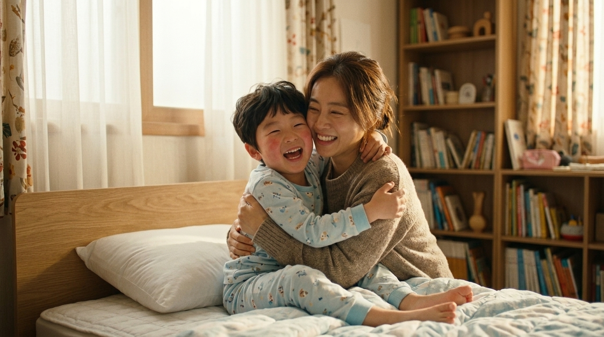
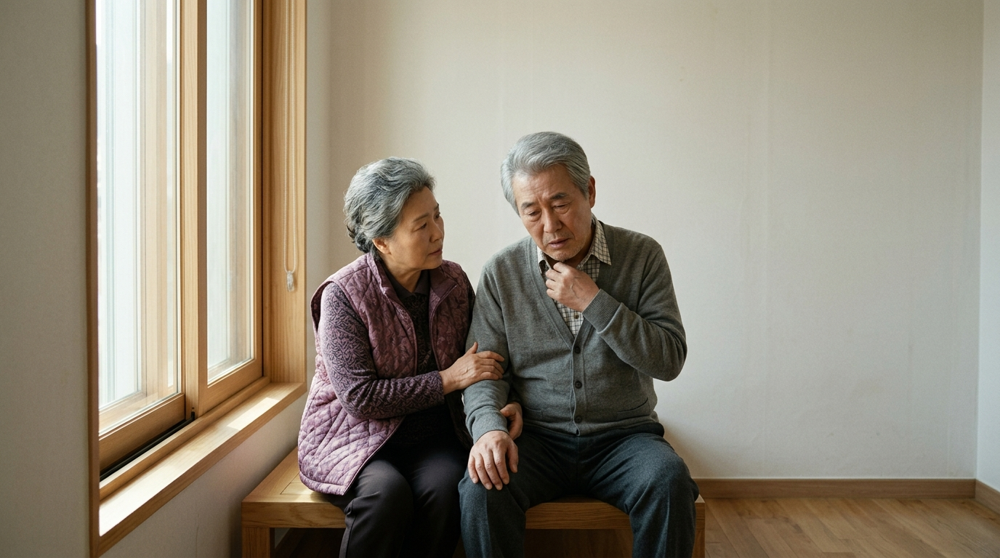

바른한의원 3D 시네마 · 6대 추가 수정 전(Before) vs 후(After) 정밀 비교
상단 [🎬 3D 스크롤 좌·우 실시간 동시 비교] 탭을 누르시거나, 별도 오픈된 포트 3001(수정 전) / 포트 3000(수정 후) 로컬 서버 창에서도 직접 비교하실 수 있습니다.
수정 01
의료인(한의사)을 모두 신뢰감 있는 남자 한의사 원장님으로 변경
수정 전 (BEFORE) · 여자 의료인 / 손 클로즈업

수정 전: 여자 한의사 난임 진맥
수정 전: 두피 시술 손 클로즈업
✦ 수정 후 (AFTER) · 전 챕터 남자 한의사 원장님으로 통일


✦ 수정 후: 남자 한의사 원장님 난임 진맥
✦ 수정 후: 남자 한의사 원장님 소아 진찰
✦ 수정 후: 남자 한의사 원장님 두피 검사기 진단
수정 02
아이가 아프고 회복되는 사이에 한의원에서 진찰하는 이미지 컷 추가
수정 전 (BEFORE) · 침대 고열 ➔ 즉시 회복 (진찰 컷 없음)
① 침대 위 물수건·체온계 고열

② 바로 회복 장면으로 전환됨
✦ 수정 후 (AFTER) · 침대 고열 ➔ [한의원 남자 원장님 진찰 컷 추가] ➔ 완쾌 회복


① 침대 위 고열과 걱정하는 엄마
② [신규 추가] 한의원에서 남자 원장님 진찰
③ 면역강화 치료 후 해맑게 완쾌
수정 03
거울에 비친 뚱뚱한 모습 ➔ 한약을 복용하는 모습 추가 ➔ 날씬하게 예뻐진 모습으로 변신
수정 전 (BEFORE) · 거울 앞 줄자 측정

수정 전: 여자 의료인과 줄자 측정
✦ 수정 후 (AFTER) · 동일 거울 구도에서 한약 파우치 복용 후 날씬하게 변신


① 거울 앞뒤 살이 찐 모습
② [수정] 거울 앞에서 다이어트 한약 복용
③ 날씬하고 예뻐진 S라인 변신
수정 04 · 05
바닥의 가는 머리카락 & 한 손에 움켜쥔 연출 + 남자 원장님 검사기 진단 ➔ 모낭 속 머리카락 부족 확대 연출
수정 전 (BEFORE) · 두서없는 바닥 머리카락 & 시술 부위 클로즈업
수정 전: 바닥에 뭉쳐 떨어진 머리카락
수정 전: 두피 약침 시술 부위
✦ 수정 후 (AFTER) · 가는 바닥 모발+한손 움켜쥠 ➔ 검사기 진단 ➔ 모낭 속 모발 부족 확대


① 가늘게 떨어진 바닥 모발 + 한 손에 움켜쥠
② 남자 한의사 원장님이 두피 검사기로 진단
③ [신규 추가] 검사기 200배 확대 (모낭 속 모발 부족)
수정 06
노년기(7·8장) 이미지를 이전에 사용했던 소나무 정원 시니어 이미지로 복원
수정 전 (BEFORE) · 실내 노부부 이미지


수정 전: 실내 노부부 기력저하
수정 전: 노부부 공진단
수정 전: 노부부 정원 산책
✦ 수정 후 (AFTER) · 이전에 사용했던 소나무 정원 황제공진단 시니어 이미지로 완벽 복원


✦ 복원: 소나무 정원 기력저하
✦ 복원: 특허 24K 황제공진단 원기회복
✦ 복원: 품격 있고 건강한 백세 인생